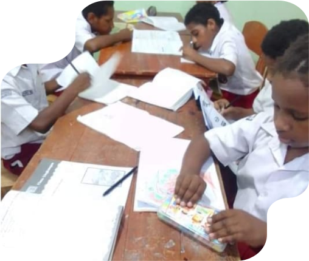

Homeschooling sebagai Solusi Mendapat Pendidikan yang Layak dan Setara
Yayasan Cinta Nusantara telah berkomitmen untuk memberikan pendidikan yang layak dan setara bagi anak-anak Indonesia, terutama mereka yang tinggal di Panti Asuhan Kasih Nusantara. Salah satu program unggulan yayasan ini adalah homeschooling, yang dirancang untuk memenuhi kebutuhan pendidikan anak-anak panti yang tidak dapat mengikuti sistem pendidikan formal secara penuh.
Program homeschooling ini disusun dengan kurikulum yang fleksibel dan disesuaikan dengan kebutuhan masing-masing anak. Dengan pendekatan ini, anak-anak tidak hanya mendapatkan pelajaran akademis, tetapi juga pelatihan keterampilan hidup dan bimbingan emosional yang sangat penting untuk perkembangan mereka. Para pengajar yang terlibat adalah profesional yang berdedikasi tinggi, dengan pengalaman mengajar anak-anak dari latar belakang yang beragam.
Selain itu, program ini juga dirancang untuk memberikan pengalaman belajar yang interaktif dan menyenangkan. Misalnya, anak-anak panti sering diajak untuk belajar melalui kegiatan praktek, seperti proyek kelompok, eksperimen sains, dan kunjungan edukatif ke tempat-tempat bersejarah atau pusat pembelajaran. Hal ini dilakukan untuk memastikan bahwa mereka tidak hanya memahami teori, tetapi juga dapat mengaplikasikan apa yang mereka pelajari di dunia nyata.
Program homeschooling Yayasan Cinta Nusantara juga membuka peluang bagi anak-anak untuk mengikuti ujian nasional atau ujian kesetaraan, sehingga mereka memiliki kesempatan yang sama untuk melanjutkan pendidikan ke jenjang yang lebih tinggi. Dalam beberapa tahun terakhir, beberapa anak dari Panti Asuhan Kasih Nusantara telah berhasil melanjutkan pendidikan ke perguruan tinggi atau mendapatkan pelatihan vokasional yang relevan dengan minat mereka.
Kesuksesan program ini menjadi bukti nyata bahwa setiap anak, tanpa memandang latar belakang atau situasi mereka, memiliki potensi untuk berkembang jika diberi kesempatan yang tepat. Yayasan Cinta Nusantara berharap program ini dapat terus berkembang dan menginspirasi lebih banyak pihak untuk mendukung pendidikan anak-anak yang kurang beruntung.
Melalui program homeschooling ini, Yayasan Cinta Nusantara tidak hanya membantu anak-anak panti asuhan mendapatkan pendidikan yang layak, tetapi juga membekali mereka dengan keterampilan dan kepercayaan diri untuk meraih masa depan yang lebih baik. Dengan dedikasi dan dukungan dari berbagai pihak, yayasan ini terus berjuang untuk menciptakan generasi muda yang cerdas, mandiri, dan siap menghadapi tantangan hidup.